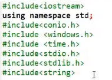
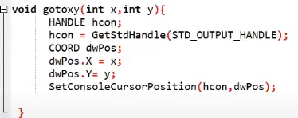
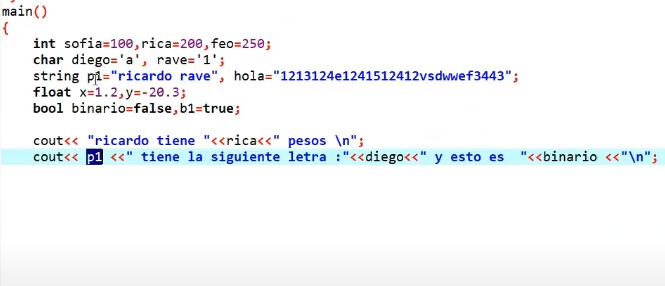
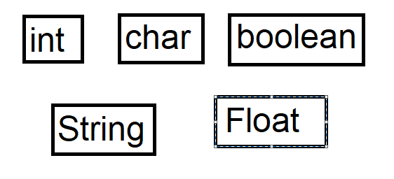
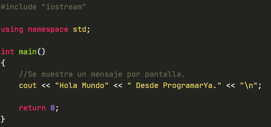
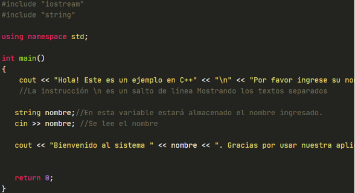
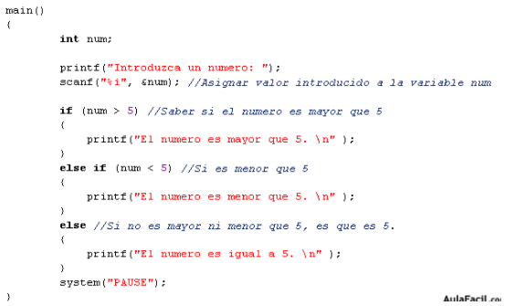
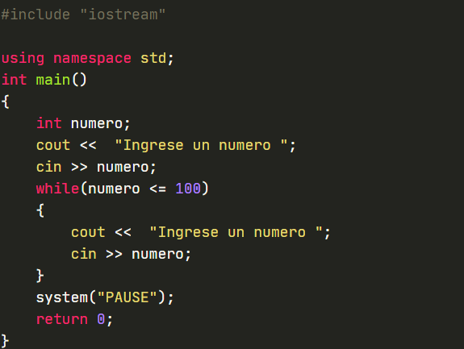

[Resumen Css]
Dev c++ es un programa que nos permite utilizar el lenguaje de programación llamado c++, para comunicarnos con el computador a través de las ordenes que le demos
Un programa de c++ está dividido en tres partes
EL ESPACIO DE LAS LIBRERIAS= es un grupo de instrucciones de un mismo tipo, y van en la parte superior (se ven de un color verde)

EL ESPACIO DE LAS FUNCIONES Y CONSTANTES= son ordenes o números que nunca cambian como el numero pi

EL ESPACIO DE MAIN= Aquí es en donde se dan y almacenan las instrucciones

Las Variables que más usaremos son

El comando cout mos sirve para imprimir una salida de texto en C++ se hace uso de la instrucción cout, junto con <<

El comando cin nos sirve para leer datos por teclado en C++, se hace usando el comando cin mas los >>

El condicional if es un comando que nos permite ejecutar una secuencia de comandos dependiendo de la condición especificada. Con la misma podemos controlar la ejecución de un código en base a las necesidades establecidas por los condicionantes
La estructura de control if else permite que un programa ejecute unas instrucciones cuando se cumple una condición y otras instrucciones cuando no se cumple esa condición

El comando while es una instrucción de control de flujo que permite ejecutar una serie de comandos repetidamente sobre la base de una condición dada, es decir, genera un bucle. Cuando la condición deje de cumplirse, la ejecución del programa saldrá del bucle y no realizará más iteraciones
